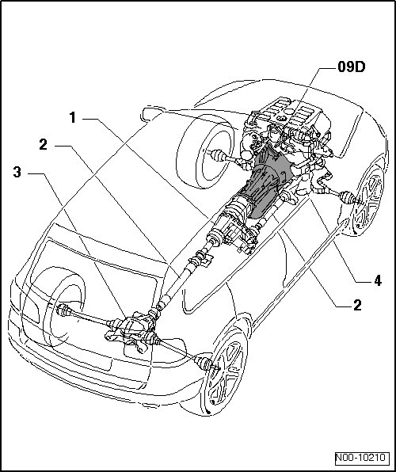

LEMON Manuals
: Even more car manuals for everyone: 1960-2025
Home
>>
Volkswagen
>>
2004
>>
Touareg (7LA) V6-3.2L (BAA)
>>
Repair and Diagnosis
>>
Transmission and Drivetrain
>>
Automatic Transmission/Transaxle
>>
Description and Operation
>>
09D Transmission
09D Transmission
Powertrain Overview

1
Transfer case
2
Driveshaft
3
Rear final drive
4
Front final drive